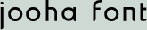

The structure of Jooha follows a new way of designing Korean typefaces that minimizes the process of designing a Korean font. Until now, the complexity of creating digitized Korean typefaces has discouraged the development of new fonts. The new method was introduced by Dr. Byung-Woo Gong in 1950 and created his first digitized font in 1993. Since then, it has inspired a number of designers to create new typefaces for the Korean language. In the traditional method, a square format dictates the design of every character. The new method allows elements to group in more open and varied configurations. Moreover, this reduces the number of characters that need to be designed from about a thousand to less than sixty-seven by maintaining each character’s proportion throughout different syllables. As a result, the typeface creates visual rhythm when the characters are laid out in a sentence, since the height of each syllable varies just like in latin typefaces.
- 
-